⛵ 奋进：风帆时代
Endeavor: Age of Sail · 设计：Carl de Visser & Jarratt Gray · Burnt Island Games / WizKids 出版 · 2–5 人 · 官方英文规则书全文翻译（12 页 · AI 辅助机翻）
本页收录《奋进：风帆时代》（Endeavor: Age of Sail, 2018）的原版官方规则书全部 12 页（底本：BoardGameGeek Files（出版方 BurntIsland 上传的官方主规则书），endeavor-age-of-sail-english-language-main-ruleboo），逐页随图排列，点击任意图片即可放大查看；每页下方默认折叠了该页的 AI 辅助中文机翻对照，需要时可展开。规则内容归 Burnt Island Games / WizKids 及版权方所有，收录仅供个人学习查阅。
整理说明：机翻对照按本站术语口径对齐（牌库/手牌/回合/轮/板块/指示物等），PDF 图文混排页的语序可能与原书视觉顺序略有出入；规则细节请一律以页面上方原书页面为准。
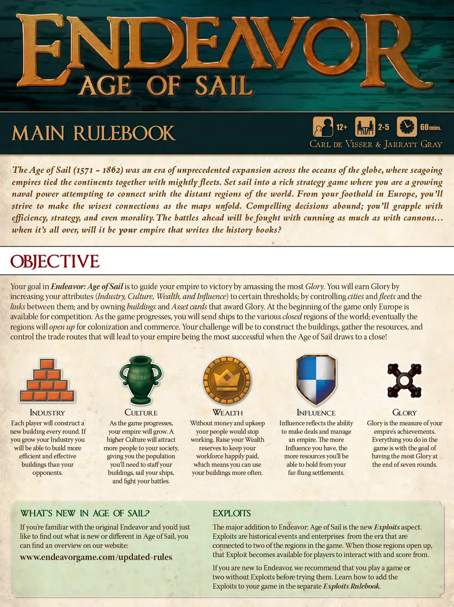
📝 第 1 页 AI 机翻对照（点击展开）
ENDEAVOR
航海时代
主规则书 12+ 2-5人 60分钟
CARL DE VISSER & JARRATT GRAY
航海时代（1571-1862）是一个前所未有的全球海洋扩张时代，海上海军力量试图与世界遥远地区建立联系。从您在欧洲的立足点出发，您将努力在地图展开时做出最明智的连接。 compelling的决策比比皆是；您将应对效率、战略甚至道德的挑战。前方的战斗将既靠狡猾也靠大炮来 fought...当一切结束时，会是您的帝国书写历史书吗？
目标
在《航海时代》中，您的目标是通过积累最多的荣耀来引导您的帝国走向胜利。您将通过提高您的属性（工业、文化、财富和影响力）到特定阈值；通过控制城市、舰队以及它们之间的连接；以及通过拥有授予荣耀的建筑和资产卡牌来获得荣耀。游戏开始时，只有欧洲可供竞争。随着游戏的进行，您将派遣船只到世界各地的封闭区域；最终这些区域将开放以供殖民和商业。您的挑战将是建造建筑、收集资源、控制贸易路线，使当航海时代结束时，您的帝国最为成功！
工业 文化 财富 影响力 荣耀
每位玩家每轮都将建造一个新的建筑。随着游戏的进行，您的帝国将会成长。更高的文化将吸引更多的人到您的社会，给您提供人口，您需要用这些人口来为您的建筑配备人员，而您的对手则无法建造。没有金钱和维护费用，您的人民将停止工作。提高您的财富储备以保持您的劳动力快乐支付，这意味着您可以更频繁地使用您的建筑。影响力反映了达成交易和管理帝国的能力。您拥有的影响力越多，您就越能够从您遥远的定居点中持有更多资源。您在游戏中所做的一切都是为了在七轮结束时拥有最多的荣耀。
《航海时代》有什么新内容？ exploits
如果您熟悉原版《Endeavor》并只想了解《航海时代》中有什么新内容或不同之处，您可以在我们的网站上找到概述：《航海时代》的主要新增内容是新的exploits方面。exploits是与游戏中两个区域相关的时代中的历史事件和事业。当这些区域开放时，
该漏洞（Exploit）变为可供玩家互动并从中得分。 www.endeavorgame.com/updated-rules
如果您是 Endeavor 的新手，我们建议您在尝试使用漏洞之前先玩一两局不包含漏洞的游戏。请参阅单独的漏洞规则书了解如何将漏洞添加到您的游戏中。
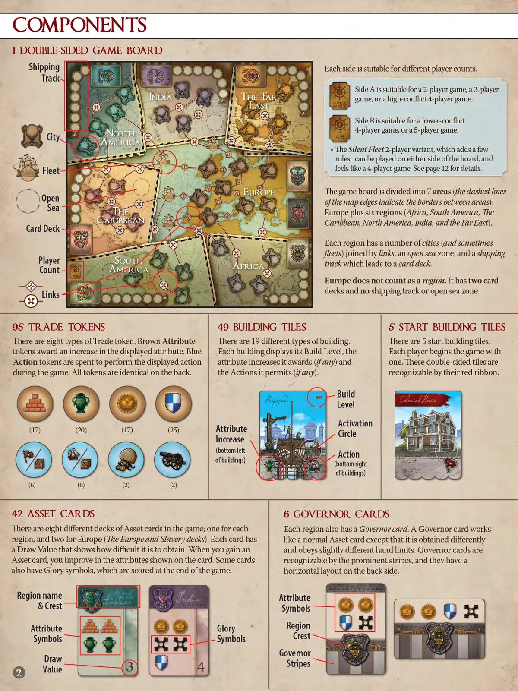
📝 第 2 页 AI 机翻对照（点击展开）
组件
1张双面游戏版图
每面适合不同玩家数量。
追踪-
A面适合2人游戏、3人
NDI THE-FAR 游戏或高冲突的4人游戏。
EAS 2/314
B面适合低冲突的
4人游戏或5人游戏。
城市。 NORTH 4/5
AMERICA
静默舰队2人变体，增加了一些
规则，可以与版图的任一面一起玩
Fleet- 并且感觉像4人游戏。详情见第12页。
EUROPE 游戏版图分为7个区域（地图边缘
Open 的虚线表示区域之间的边界）；
Sea 欧洲加上六个地区（非洲、南美、加勒比海、
Player 北美、印度和远东）。
Count AMERIC AFRICA
每个区域有若干城市（有时还有舰队）
Links 通过连接线相连，一个开放海区，以及一条通往
卡牌库的航运路线。
欧洲不算作一个地区。它有两个卡牌库
但没有航运路线或开放海区。
95个贸易指示物 49个建筑板块 5个起始建筑板块
有19种不同类型的建筑。 有八种贸易指示物类型。棕色属性 指示物提供显示属性的增益。蓝色 指示物用于在游戏中执行行动。所有指示物背面相同。
建筑
等级
激活
(20) (17) 属性 (17) (25) 圆圈
增益
（建筑左下角） 行动
（建筑右下角）
(6) (6) (2) (2)
42张资产卡 6总督卡
游戏中有八种不同的资产卡牌库；每个地区一种，欧洲有两种（欧洲和奴隶制牌库）。每张卡都有 显示获取难度的摸牌值。当你获得一张资产卡时，你会提升卡上显示的属性。一些卡还有荣耀符号，在游戏结束时计分。
地区名称 属性
&纹章 符号 品点 荣誉 地区 属性
符号 符号 纹章 XX
总督 条纹 摸牌
值
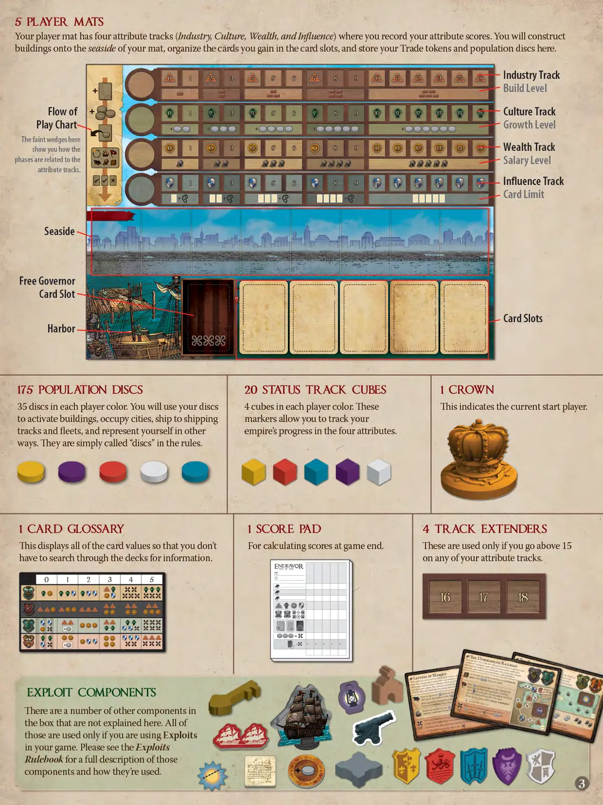
📝 第 3 页 AI 机翻对照（点击展开）
5张玩家版图
你的玩家版图有四条属性轨道（工业、文化、财富和影响力），你可以在上面记录你的属性分数。你将在版图的沿海一侧建造建筑，在卡牌槽中整理你获得的卡牌，并在这里存放你的贸易指示物和人口圆片。
2 3 5 8 9 10 15. 工业轨道
建造等级
文化轨道流动 2 3 8 9 10 12 13
图表- 增长等级
这里的淡色楔形显示 财富轨道
了各个阶段如何与 3 8 9 P 13
薪资等级 属性轨道相关。 22222
影响力轨道 卡牌上限
沿海
总督免费
卡牌槽-
卡牌槽
港口
175个人口圆片 20个状态轨道方块 1个王冠
每种玩家颜色有35个圆片：你将使用你的圆片来激活建筑、占领城市、运输到运输轨道和舰队，并在其他方面代表你自己。在规则中它们简称为"圆片"。
每种玩家颜色有4个方块 这些方块可以让你追踪
你的帝国在四种属性上的进展。
这表示当前起始玩家。
1张卡牌术语表 1张记分板 4个轨道延长器
这显示了所有卡牌的数值，这样你就无需在牌库中搜索信息。 用于游戏结束时计算分数。 只有当你的任何一条属性轨道超过15时才使用。
ENDEAVOR
Blol 0 2 3 4 5
00 XXX 16 17
AAO AOOAAA 点点
XXX X00 XXX
=
XXX XX
开发组件
盒子里还有一些其他组件，这里没有解释。所有那些组件都只有在你游戏中使用开发时才会使用。请参阅开发规则书，了解这些组件的完整描述和使用方法。
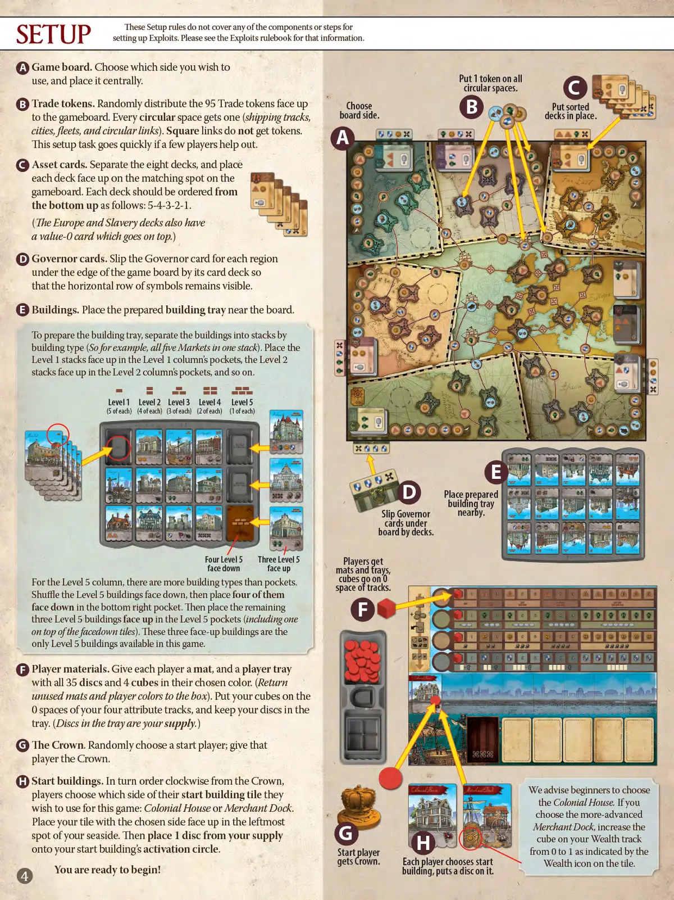
📝 第 4 页 AI 机翻对照（点击展开）
设置
这些设置规则不涵盖设置《 exploits》的任何组件或步骤。请参阅《 exploits》规则书获取该信息。
A 游戏版图。选择你想要使用的一面，并将其放置在中央。在所有圆形格上各放置1个指示物。
B 贸易指示物。将95个贸易指示物随机正面朝上分发到游戏版图上。每个圆形格获得一个（航运轨道、城市、舰队和圆形连接）。方形连接不获得指示物。
如果几位玩家帮忙协助，这个设置任务会很快完成。
B 选择放置好的
牌库和
牌堆。
A AAPX
B 资产卡牌。将八副牌库分开，并将每副牌库正面朝上放置在游戏版图上对应的标记处。每副牌库应从下到上的顺序如下：5-4-3-2-1。
（欧洲和奴隶制牌库还有一张价值0的卡牌，放在最上面。）
D 总督卡牌。将每个区域的总督卡牌滑入游戏版图边缘，放在其牌库下方，使水平行的符号保持可见。
建筑。将准备好的建筑托盘放在版图附近。
®
要准备建筑托盘，按建筑类型将建筑分成堆（例如，所有五个市场放在一堆）。将1级堆正面朝上放入1级列的口袋中，2级堆正面朝上放入2级列的口袋中，以此类推。
Level1 Level2 Level3 Level4 Level5
(每种5个) (每种4个) (每种3个) (每种2个) (每种1个)
XGGG
000X 放置准备好的
建筑托盘
滑入总督
卡牌到版图
下方牌库处。
ThreeLevel5 FourLevel5 玩家获得
faceup facedown 垫子和托盘，
FortheLevel 5column,there aremorebuilding typesthanpockets. cubes go on0 space of tracks.
将5级建筑洗牌背面朝上，然后在右下角的口袋中放置四个背面朝上的建筑。然后将剩余的三个5级建筑正面朝上放入5级口袋中（包括一个放在背面朝上的板块上的建筑）。这三个正面朝上的建筑是本游戏中唯一可用的5级建筑。
F
O6P
H 玩家材料。给每位玩家一个垫子和一个玩家托盘，托盘中有其选定颜色的35个圆盘和4个立方体。（将未使用的垫子和玩家颜色放回盒中）。将你的立方体放在你四条属性轨道的0格上，并将你的圆盘保存在托盘中。（托盘中的圆盘是你的供应品。）
王冠。随机选择一个起始玩家；将该玩家给予王冠。
H 起始建筑。按顺时针顺序从王冠开始，玩家选择其起始建筑板块的哪一面用于本游戏：殖民房屋或商人码头。
我们建议初学者选择殖民房屋。如果你选择
更高级的商人码头，将你的
立方体从0增加到1，如板块上的
财富图标所示。每个玩家选择起始
建筑，并在上面放置一个圆盘。起始玩家
获得王冠。你准备好开始游戏了！
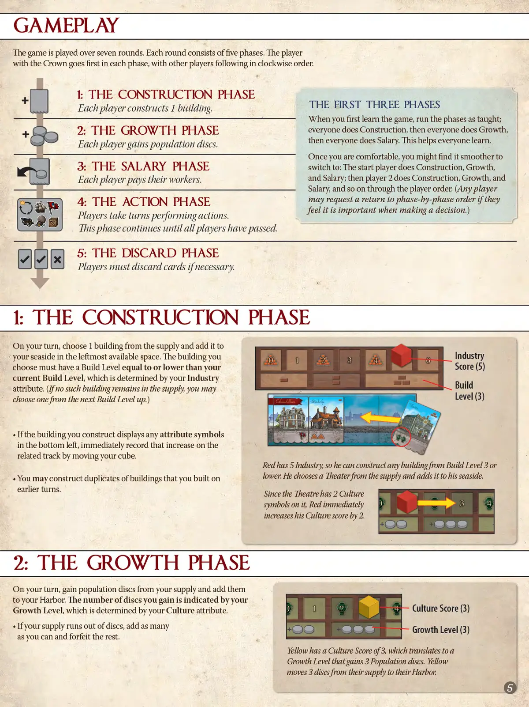
📝 第 5 页 AI 机翻对照（点击展开）
游戏进行
游戏进行七个回合。每个回合包含五个阶段。拥有王冠的玩家在每个阶段中先行，其他玩家按顺时针顺序跟随。
1：建造阶段
前三个阶段 每位玩家建造1座建筑。
当你初次学习游戏时，按教学方式运行阶段；
2：成长阶段 所有人都进行建造，然后所有人都进行成长，
每位玩家获得人口指示物。 然后所有人都进行薪资发放。这有助于所有人学习。
一旦你熟悉了游戏，你可能会发现 3：薪资阶段 切换为以下方式更流畅：
每位玩家支付其工人费用。 起始玩家进行建造、成长和薪资发放；然后玩家2进行建造、成长和薪资发放，依此类推按玩家顺序进行。（任何玩家
4：行动阶段 都可以在做决定时要求恢复按阶段顺序。）
玩家轮流执行行动。 此阶段持续到所有玩家都已跳过为止。
5：弃牌阶段
玩家如有必要必须弃牌。
1：建造阶段
在你的回合，从供应区中选择1座建筑，并将其添加到你海滨最左边的可用格中。你选择的建筑必须具有等于或低于你当前建造等级的建造等级，你的建造等级由你的工业属性决定。（如果供应区中没有此类建筑剩余，你可以从下一个建造等级中选择一座。） Knsnpui 0
· 如果你建造的建筑在左下角显示有任何属性符号， 分数(5)
立即通过移动你的立方体在相关轨道上记录该增长。 建造
红色有5点工业，因此他可以建造建造等级3或 等级(3)
更低的任何建筑。他选择供应区中的一座剧院并将其添加到他的海滨中。 由于剧院上有2个文化符号，红色立即
你可以建造你在之前回合建造过的建筑的复制品。 将他的文化分数增加2点
2：成长阶段
在你的回合，从你的供应区中获得人口指示物并将其添加到你的港口中。你获得的指示物数量由你的成长等级决定，你的成长等级由你的文化属性决定。
如果你的供应区中的指示物用完，尽可能多地添加指示物，并放弃剩余的指示物。 文化分数(3)
黄色有3点文化分数，这转化为一个 成长等级(3)
可以获得3个人口指示物的成长等级。黄色
将3个指示物从他们的供应区移动到他们的港口中
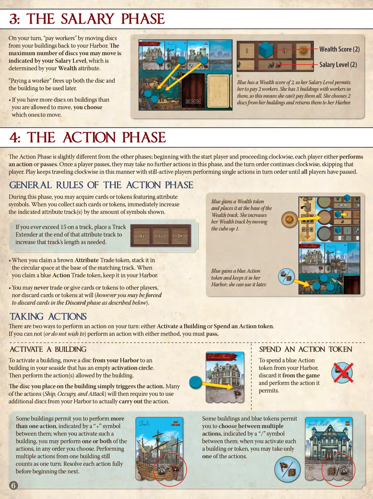
📝 第 6 页 AI 机翻对照（点击展开）
3:薪资阶段
从你的建筑中把指示物移回你的港口。最多可移动的指示物数量由你的薪资等级决定，薪资等级由你的财富属性决定。
"支付工人"会释放指示物，并使建筑稍后可被使用。蓝色拥有财富分数2，所以她的薪资等级允许她支付2个工人。她有3个建筑中有工人，这意味着她无法全部支付。她选择从她的建筑中移动2个指示物，并将它们返回到她的港口：
如果你建筑上的指示物数量超过了你被允许移动的数量，你可以选择移动哪些。
4:行动阶段
行动阶段与其他阶段略有不同；从起始玩家开始，按顺时针方向，每个玩家要么执行一个行动，要么跳过。一旦玩家跳过，他们在此阶段不能再执行任何行动，回合顺序继续按顺时针方向进行，跳过该玩家。游戏以这种方式继续按顺时针方向进行，仍在活跃的玩家按顺序执行单个行动，直到所有玩家都跳过。
行动阶段的一般规则
在此阶段，你可以获取带有属性符号的卡牌或指示物。当你收集此类卡牌或指示物时，立即根据显示的符号数量增加相应的属性轨道上的数值。如果你在任何轨道上超过15，在该属性轨道末端放置一个轨道扩展器，根据需要增加该轨道的长度。
当你获取一个棕色属性交易指示物时，将其堆叠在相应轨道底部的圆形空间中。当你获取一个蓝色行动交易指示物时，将其保留在你的港口中。你永远不能与其他玩家交易或给予卡牌或指示物，也不能随意弃置卡牌或指示物（然而，你可能会在下面描述的弃牌阶段中被强制弃置卡牌）。
执行行动
有两种方式在你的回合执行行动：激活建筑或花费行动指示物。
如果你无法（或不想）通过任一方式执行行动，你必须跳过。
激活建筑 花费行动指示物
要激活建筑，将一个指示物从你的港口移动到你海滨地区的一个激活圆圈为空的建筑上。然后执行该建筑允许的行动。你放置在建筑上的指示物只是触发行动。许多行动（航行、占领和攻击）随后会要求你使用港口中的额外指示物来实际执行行动。
些建筑允许你执行更多 些建筑和蓝色指示物允许
当你激活一个建筑时，你可以执行一个或两个行动，由"+"符号表示；你可以在它们之间选择；当你激活这样的建筑时，你可以在你选择的任何顺序中执行这些行动。从一个建筑执行多个行动仍然算作一个回合。在开始下一个行动之前，完全解决每个行动。
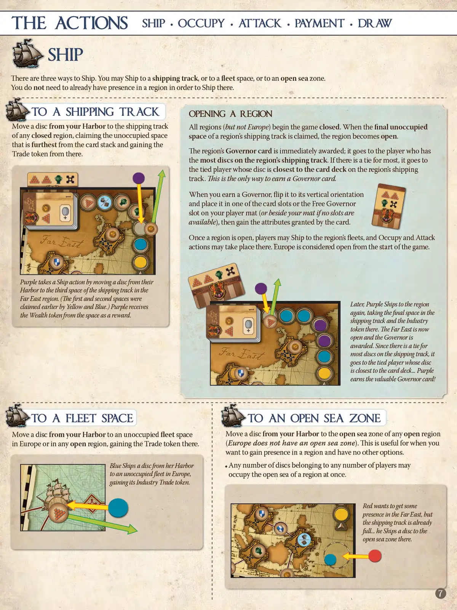
📝 第 7 页 AI 机翻对照（点击展开）
行动 运输·占据·攻击·支付·摸牌
运输
有三种运输方式。你可以运输到运输轨道，或者到舰队空间，或者到开放海域。
你不需要在某个区域已有存在才能向那里运输。
到运输轨道 打开一个区域
将一个圆盘从你的港口移动到任何封闭区域的运输轨道上，占据最远离卡牌堆的未占据空间，并从该空间获得贸易指示物。
所有区域（欧洲除外）开始游戏时都是封闭的。当一个区域的运输轨道上最后一个未占据空间被占据时，该区域变为开放状态。
该区域的总督卡立即被授予；它被授予在区域运输轨道上拥有最多圆盘的玩家。如果最多数量有平局，则授予在运输轨道上圆盘最靠近卡牌堆的平局玩家。这是获得总督卡的唯一方式。
当你获得总督时，将其翻转为垂直方向，并将其放置在你的玩家版图上的一个卡槽或空闲总督槽中（如果没有可用槽则放在版图旁边），然后获得卡牌赋予的属性。
远东 一旦区域开放，玩家可以运输到该区域的舰队，占据和攻击行动可以在那里进行。欧洲从游戏开始就被视为开放区域。
紫色通过将圆盘从其港口移动到远东区域的运输轨道的第三个空间来进行运输行动。（第一和第二空间之前已被黄色和蓝色占据。）紫色从该空间获得财富指示物作为奖励。
运输轨道和工业指示物。远东现在是开放的，总督被授予。由于在运输轨道上最多圆盘数量有平局，它被授予在运输轨道上圆盘最靠近卡牌堆的平局玩家。紫色获得了宝贵的总督卡！
到舰队空间 到开放海域
将一个圆盘从你的港口移动到欧洲或任何开放区域中未占据的舰队空间，获得该空间的贸易指示物。 将一个圆盘从你的港口移动到任何开放区域的开放海域（欧洲没有开放海域）。当你想在某个区域获得存在且没有其他选择时，这很有用。
蓝色将其港口中的一个圆盘运输到欧洲的一个未占据舰队， 属于任何数量的任何数量的玩家的任意数量的圆盘可以
获得其工业贸易指示物。 同时占据一个区域的开放海域。
红色想在远东获得一些
存在感，但运输轨道
已经满了..他将一个圆盘
运输到那里的开放海域。
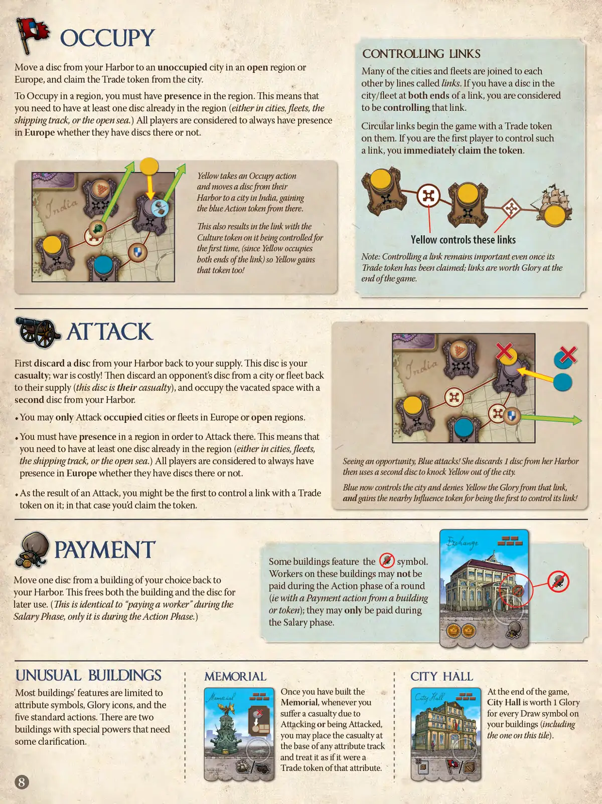
📝 第 8 页 AI 机翻对照（点击展开）
占领
控制连接
将一个圆盘从你的港口移动到一个未占领的、位于开放区域或欧洲的城市，并从该城市获取贸易标记。许多城市和舰队通过称为连接的线路相互连接。如果你在连接的两端（城市/舰队）都有圆盘，则被认为是在控制该连接。圆形连接在游戏开始时带有贸易标记。如果你是第一个控制此类连接的玩家，你立即获取该标记。
黄色执行占领行动，将其港口中的一个圆盘移动到印度的城市，从而获得该城市的蓝色行动标记。这也导致带有文化标记的连接首次被控制（因为黄色占据了连接的两端），因此黄色也获得了该标记！
注意：即使连接的贸易标记已被获取，控制连接仍然很重要；连接在游戏结束时提供荣耀值。
攻击
首先将一个圆盘从你的港口放回你的供应区。这个圆盘是你的伤亡；战争是有代价的！然后将对手的一个圆盘从城市或舰队放回其供应区（这个圆盘是他们的伤亡），并用你港口中的第二个圆盘占领这个空出的位置。
你只能攻击欧洲或开放区域中已被占领的城市或舰队。你必须在一个区域内有存在才能在该区域攻击。这意味着你需要至少有一个圆盘已经在该区域内（无论是在城市、舰队、航运轨道或公海）。无论玩家是否在该区域有圆盘，所有玩家都被认为在欧洲始终有存在。
看到机会，蓝色发动攻击！她从她的港口弃置1个圆盘，然后用第二个圆盘将黄色赶出城市。蓝色现在控制了该城市，并阻止黄色获得该连接的荣耀值，同时作为第一个控制其附近连接的玩家，获得了影响力标记！
作为攻击的结果，你可能是第一个控制带有贸易标记的连接的玩家；在这种情况下，你会获取该标记。
支付
一些建筑具有 符号。这些建筑上的工人在一轮的行动阶段（即通过使用建筑或标记的支付行动）不能被支付；他们只能在薪资阶段被支付。
将你选择的一个建筑上的一个圆盘移回你的港口。这使建筑和圆盘都得到释放，可供后续使用。（这与在薪资阶段"支付工人"相同，只是它发生在行动阶段。）
特殊建筑 纪念碑 市政厅
大多数建筑的功能仅限于：一旦你建造了 在游戏结束时，
Memorial，每当你的建筑（包括带有需要攻击或被攻击的特殊能力的建筑）遭受伤亡时，你可以将伤亡指示物放置在任何属性轨道的底部，并将其视为该属性的贸易指示物。对于每个"Draw"符号，有五个标准行动。需要一些澄清。
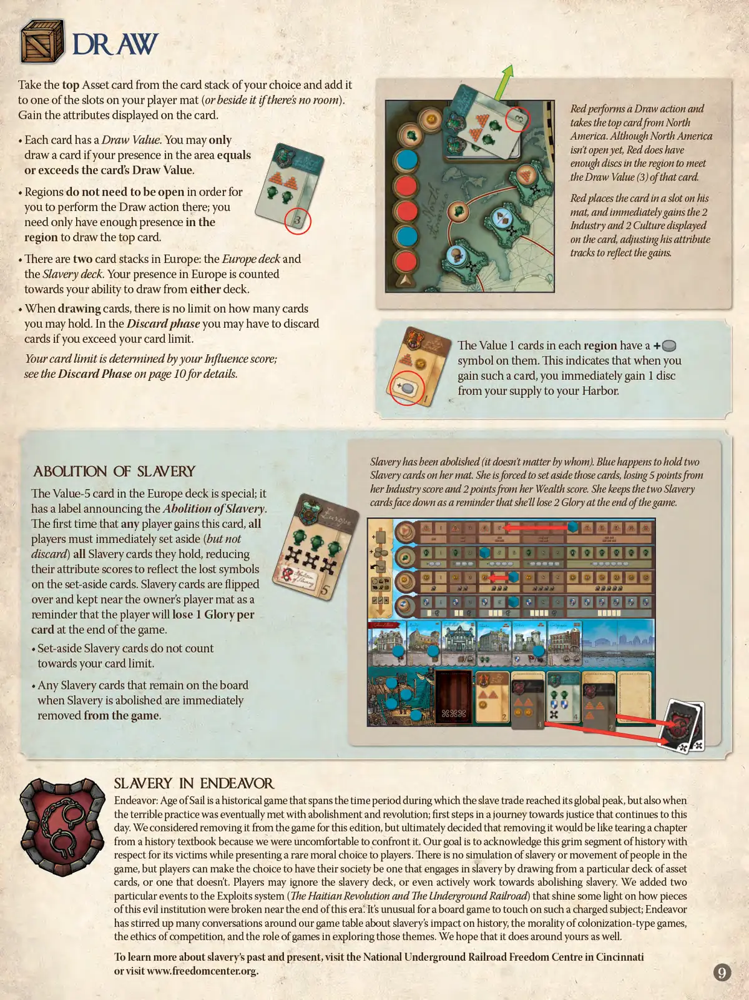
📝 第 9 页 AI 机翻对照（点击展开）
摸牌
从你选择的牌堆顶拿取一张资产卡，并将其添加到你玩家版图的一个槽位上（如果没有空间，则放在版图旁边）。
获得卡牌上显示的属性。
· 红色执行摸牌行动，并从北美牌堆顶拿取一张牌。尽管北美没有开放，但该区域有足够的圆盘来满足该卡的摸牌值（3）。
区域不需要开放即可让你在该区域执行摸牌行动；你只需要在该区域有足够的存在感即可摸取顶牌。
红色将卡牌放在他的版图槽位上，并立即获得卡牌上显示的2工业和2文化，调整他的属性轨道以反映这些收益。
· 欧洲有两个牌堆：欧洲牌堆和奴隶制牌堆。你在欧洲的存在感计入你从任一牌堆摸牌的能力。
· 摸牌时，你可以持有的卡牌数量没有限制。在弃牌阶段，如果你超过卡牌上限，可能需要弃牌。
你的卡牌上限由你的影响力分数决定；详情请参见第10页的弃牌阶段。
每个区域的数值1卡牌上有一个+符号。这表示当你获得此类卡牌时，你立即从你的供应区获得1个圆盘到你的港口。
奴隶制已被废除（无论由谁废除）。蓝色恰好在她版图上持有两张奴隶制卡牌。她被迫将这些卡牌放到一边，她的工业分数减少5分，财富分数减少2分。她将两张奴隶制卡牌面朝下保留，作为提醒，表示她将在游戏结束时失去2荣耀。
欧洲牌堆中的数值-5卡牌是特殊的；它有一个标签宣布废除奴隶制。
当任何玩家首次获得此卡牌时，所有玩家必须立即将他们持有的所有奴隶制卡牌放到一边（但不弃置），减少他们的属性分数以反映这些被放一边卡牌上失去的符号。奴隶制卡牌被翻转过来，放在所有者玩家版图附近，作为提醒，表示玩家将在游戏结束时每张卡牌失去1点荣耀。
· 被放一边的奴隶制卡牌不计入你的卡牌上限。
当奴隶制被废除时，版图上剩余的任何奴隶制卡牌都会立即从游戏中移除。
《奋进：航海时代》中的奴隶制
《奋进：航海时代》是一款历史游戏，时间跨度涵盖了奴隶贸易达到全球顶峰的时期，同时也涵盖了这一可怕实践最终被废除和革命的时期；这是迈向正义的旅程的第一步，这一旅程至今仍在继续。我们曾考虑在本版中移除它，但最终决定移除它就像撕掉历史教科书的一章，因为我们不愿面对它。我们的目标是承认这段黑暗的历史，
尊重其受害者，同时为玩家呈现一个罕见的道德选择。游戏中没有对奴隶制或人口迁移的模拟，但玩家可以选择让自己的社会参与奴隶制，通过从特定的资产牌库中抽牌，或者选择不这样做。玩家可以忽略奴隶制牌库，甚至积极致力于废除奴隶制。我们在剥削系统中添加了两个特殊事件（海地革命和地下铁路），这些事件揭示了在这个时代末期这一邪恶制度的某些部分是如何被打破的。桌面游戏很少会触及这样一个充满争议的主题；努力游戏在我们的游戏桌周围引发了关于奴隶制对历史的影响、殖民类型游戏的道德性、竞争的伦理以及游戏在探索这些主题中的作用的大量讨论。我们希望它也能在您的游戏桌周围引发同样的讨论。
要了解更多关于奴隶制的过去和现在，请访问辛辛那提的国家地下铁路自由中心，或访问 www.freedomcenter.org。
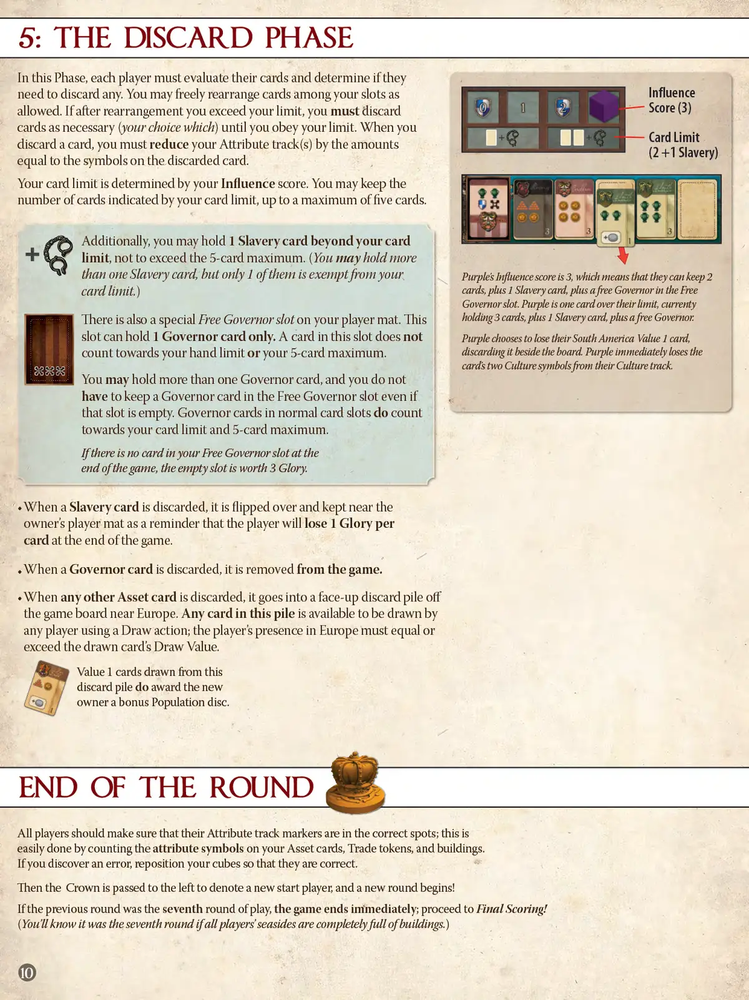
📝 第 10 页 AI 机翻对照（点击展开）
5:弃牌阶段
在此阶段，每位玩家必须评估自己的牌并确定是否需要弃牌。你可以自由地在你的槽位之间重新排列牌，只要规则允许。如果重新排列后你超过了你的手牌上限，你必须弃牌直到遵守你的手牌限制（你可以选择弃哪些牌）。当你弃牌时，你必须根据被弃牌上的符号数量减少你的属性轨道值。
你的手牌上限由你的影响力分数决定。你可以持有等于你手牌上限数量的牌，最多五张牌。此外，你可以在手牌上限外多持有1张奴隶牌，但不能超过5张的最大值。你可以持有超过一张奴隶牌，但只有其中一张可以豁免你的手牌上限。
紫色玩家的影响力分数是3，这意味着他们可以持有3张牌加1张奴隶牌，再加上一张免费的总督牌在总督槽位中。紫色玩家目前持有4张牌（1张奴隶牌和3张其他牌），超过了他们的手牌上限。紫色玩家选择失去他们的南美洲价值1牌，将其弃在版图旁边。紫色玩家立即从他们的文化轨道上失去该牌的两个文化符号。
你的玩家版图上还有一个特殊的免费总督槽位。这个槽位只能持有1张总督牌。此槽位中的牌不计入你的手牌上限或5张最大值。你可以持有超过一张总督牌，即使免费总督槽位为空，你也不必在其中放置总督牌。普通槽位中的总督牌确实计入你的手牌上限和5张最大值。
如果游戏结束时你的免费总督槽位中没有牌，这个空槽位价值3点荣耀。
当奴隶牌被弃置时，它会被翻转过来并放在所有者玩家版图旁边，提醒玩家在游戏结束时将每张奴隶牌损失1点荣耀。
当总督牌被弃置时，它会被移出游戏。
当任何其他资产牌被弃置时，它会被放到版图旁欧洲附近的一个正面朝上的弃牌堆中。此弃牌堆中的任何牌都可以被任何玩家通过摸牌行动抽取；玩家在欧洲的存在度必须等于或超过所抽牌的摸牌数值。
从此弃牌堆中抽取的价值1牌不会给新所有者奖励一个人口指示物。
回合结束
所有玩家应确保他们的属性轨道指示物在正确的位置；这可以通过计算你的资产牌、贸易标记和建筑上的属性符号数量轻松完成。如果你发现错误，重新放置你的立方体使其正确。
然后王冠向左传递以表示新的起始玩家，新一轮开始！
如果上一轮是第七轮游戏，游戏立即结束；进入最终计分！（如果所有玩家的海滨区域完全被建筑填满，你就会知道那是第七轮。）
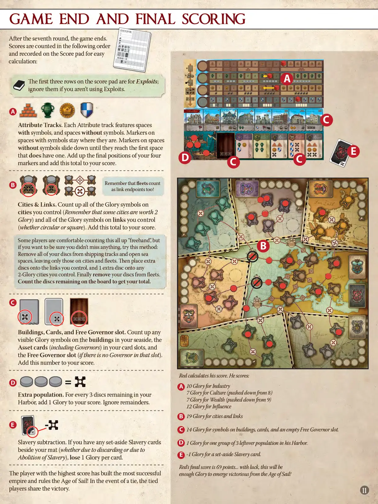
📝 第 11 页 AI 机翻对照（点击展开）
游戏结束与最终计分
BNDEMOR
第七轮结束后，游戏结束。
分数按以下顺序计算并记录在计分表上以便于计算：
计分表的前三行用于功勋；如果你不使用功勋，则忽略它们。
属性轨道。每条属性轨道包含带有符号的格子和不带符号的格子。带有符号的格子上的指示物保持原位。不带符号的格子上的指示物向下滑动，直到它们到达第一个带有符号的格子。将你的四个指示物的最终位置相加，并将这个总数加到你的分数中。
记住，舰队也计为连接端点！
城市与连接。计算你控制的所有城市上的荣耀符号总数（记住有些城市价值2点荣耀）和你控制的所有连接（无论是圆形还是方形）上的荣耀符号总数。将这个总数加到你的分数中。
有些玩家习惯于直接"心算"计算所有这些，但如果你想确保没有遗漏任何内容，可以尝试这种方法：
从航运轨道和公海格子上移除你所有的圆盘，只留下城市和舰队上的圆盘。然后，将额外的圆盘放置到你控制的连接上，并在任何价值2点荣耀的城市上放置1个额外圆盘。最后，从舰队上移除你的圆盘。
计算留在版图上的圆盘数量以获得你的总分。
建筑、卡牌和总督空位。计算你海滨区的建筑上所有可见的荣耀符号、你的卡牌槽中的资产卡（包括总督）以及空的总督槽（如果该槽位没有总督）上的荣耀符号数量。将这个数字加到你的分数中。
建筑、卡牌和总督空位。计算你海滨区的建筑上所有可见的荣耀符号、你的卡牌槽中的资产卡（包括总督）以及空的总督槽（如果该槽位没有总督）上的荣耀符号数量。将这个数字加到你的分数中。
OOO=x 红色玩家计算他的分数。他获得：
A10点工业荣耀
额外人口。对于留在你的海港中每3个圆盘，加1点荣耀到你的分数中。忽略余数。
7点文化荣耀（从8点下移）
7点财富荣耀（从9点下移）
12点影响力荣耀
B19点城市和连接的荣耀
14点建筑、卡牌和空的总督槽上的符号的荣耀。
D1点他海港中一组3个剩余人口的荣耀。
奴隶制减法。如果你在版图旁边有任何被置于一旁的奴隶制卡牌（无论是由于弃牌还是由于废除奴隶制），每张卡牌扣1点荣耀。
E1点一张被置于一旁的奴隶制卡牌的扣分。
红色玩家的最终分数是69分...运气好的话，这将足以让他从航海时代中脱颖而出，取得胜利！
得分最高的玩家建立了最成功的帝国，统治了航海时代！如果出现平局，平局玩家共享胜利。
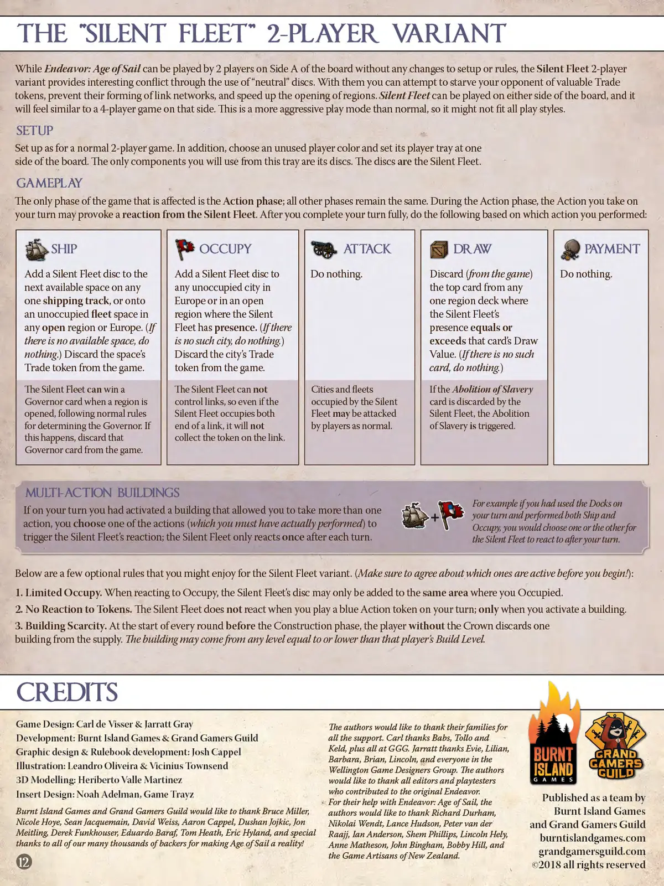
📝 第 12 页 AI 机翻对照（点击展开）
"无声舰队"双人变体
虽然《奋进：航海时代》(Endeavor: Age of Sail)可以在版图A面进行双人游戏，无需对设置或规则进行任何更改，但无声舰队双人变体通过使用"中立"指示物提供了有趣的冲突。通过它们，你可以尝试剥夺对手宝贵的贸易指示物，阻止他们形成连接网络，并加快区域开放。无声舰队可以在版图的任意一面进行游戏，感觉与在该面进行的四人游戏相似。这是一种比正常模式更具攻击性的玩法，因此可能不适合所有玩家的游戏风格。
设置
按照正常双人游戏进行设置。此外，选择一个未使用的玩家颜色，并将其玩家托盘放在版图的一侧。你将只使用该托盘中的指示物。这些指示物就是无声舰队。
游戏进行
你的回合可能会引发无声舰队的反应。在你完全完成回合后，根据你执行的操作执行以下操作：
占领 摸牌 航行 攻击 支付
将一个无声舰队指示物添加到任意一条航路轨道上的下一个可用空间，或添加到欧洲或任意开放区域的一个未占领的舰队空间上。（如果没有可用空间，则什么都不做。）从游戏中移除该空间的贸易指示物。 将一个无声舰队指示物添加到欧洲或无声舰队有存在的任意开放区域中的一个未占领城市。（如果没有这样的城市，则什么都不做。）从游戏中移除该城市的贸易指示物。 什么都不做。 从任意区域牌堆中无声舰队存在等于或超过该牌的摸牌值时，移除（从游戏中）该牌堆顶部的牌。（如果没有这样的牌，则什么都不做。） 什么都不做。
当区域被开放时，无声舰队可以获得总督卡，遵循确定总督的正常规则。如果发生这种情况，从游戏中移除该总督卡。 无声舰队不能控制连接，因此即使无声舰队占据了连接的两端，也不会获得连接上的指示物。 被无声舰队占领的城市和舰队可以被玩家正常攻击。 如果《废除奴隶制》卡被无声舰队弃置，则触发《废除奴隶制》效果。
多行动建筑
例如，如果你在你的回合使用了码头，并执行了航行和占领两个行动，你选择其中一个行动（你必须实际执行过）来触发无声舰队的反应；无声舰队只在每个回合后反应一次。 如果在你的回合你激活了一个允许你执行多个行动的建筑，你选择其中一个行动（你必须实际执行过）让无声舰队在你的回合后进行反应。
- 有限占领。当对占领做出反应时，无声舰队的指示物只能添加到你占领的同一区域。
- 对指示物无反应。无声舰队在你回合打出蓝色行动指示物时不会反应；只在激活建筑时反应。
3. 建筑稀缺性
在每个回合开始前建造阶段，没有皇冠的玩家从供应区弃置一个建筑。该建筑可以来自该玩家建筑等级等于或低于的任何等级。
制作人员
游戏设计：Carl deVisser & Jarratt Gray
开发：Burnt Island Games & Grand Gamers Guild
图形设计与规则书开发：Josh Cappel
插画：Leandro Oliveira & Vicinius Townsend
3D建模：Heriberto Valle Martinez
配件设计：Noah Adelman, GameTrayz
作者们想要感谢他们的家人给予的所有支持。Carl感谢Babs、Tollo和Keld，以及GGG的所有人。Jarratt感谢Evie、Lilian、Barbara、Brian、Lincoln和Wellington Game Designers Group的所有人。作者们想要感谢所有为原始Endeavor做出贡献的编辑和测试者。
对于他们在《Endeavor: Age of Sail》中的帮助，Burnt Island Games和Grand Gamers Guild想要感谢Bruce Miller；作者们想要感谢Richard Durham、Nikolai Wendt、Lance Hudson、Peter van der Raajj、Ian Anderson、Shem Phillips、Lincoln Hely、Anne Matheson、John Bingham、Bobby Hill，以及新西兰的游戏工匠们。感谢我们成千上万的 backers，让《Age of Sail》成为现实！
Burnt Island Games
grandgamersguild.com
burntislandgames.com
12 2018 版权所有